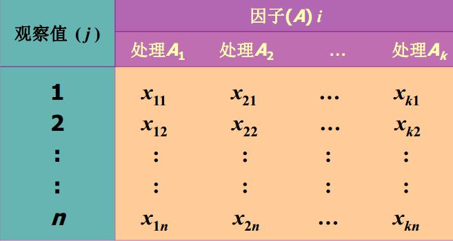

第 8 章 ANOVA
本篇是第八章，内容是方差分析。方差分析是很多实验的基础以及很重要的分析手段，这一章内容相比较而言比较多。
8.1 方差分析的引论
方差分析其实对我们来说并不陌生，因为大学搞生态的那群同学，实验中无数次出现了单方差因素分析的方法。那么方差分析究竟是什么呢？从引论来说，我们举个跟地学领域相关的例子。不同地貌对土壤有机质是否有影响？简单地说方差分析实质适合分析的是一系列数值型数据存在某个属性（也可以是某些），然后这个属性可以按照一定的规则分成几个类别（或者叫水平），我们想了解的就是，不同类别或者不同水平的这个数值是否存在显著性差异。简单的理解，它是处理分类型数据的。这里需要跟上一章提到的拟合优度检验、后面讲到的回归分析做些区别，拟合优度检验通常是分析两个分类变量的关系，回归分析则分析的是一个数值型变量（或多个数值型变量）对一个数值型变量的影响（或者说二者的关系）。而方差分析则是分析一个分类变量（或多个分类变量）对于一个数值变量的影响（或者说二者的关系）。
这里给出一些定义和术语（不喜好数学的同学可以跳过，但请记住我上面的内容）：
方差分析(Analysis of Variance，ANOVA)
研究分类型自变量对数值型因变量的影响。
- 一个或多个分类型自变量：两个或多个 (k 个) 处理或分类
- 一个数值型因变量
通过检验多个总体均值是否相等来判断是否有显著影响
- 通过分析数据的误差判断各总体均值是否相等
有单因子方差分析和双因子方差分析
- 单因子方差分析：涉及一个分类型自变量
- 双因子方差分析：涉及两个分类型自变量
方差分析 vs 假设检验
（1）假设检验：一次只能研究两个样本
- 需要比较的次数随因子的数量增多而增多；
- 第一类错误发生的可能性增大。
（2）方差分析：同时分析多个样本
- 提高检验效率；
- 将所有信息结合在一起， 增加了分析的可靠性。
8.1.1 方差分析的部分概念
- 因子或因素 (factor)——所要检验的对象，要分析行业对投诉次数是否有影响， 行业是要检验的因子或因素。
- 水平或处理(treatment):因子的不同表现,零售业、 旅游业、 航空公司、 家电制造业就是因子的处理。
- 观察值：在每个因子处理下得到的样本数据，每个行业被投诉的次数就是观察值。
- 试验：涉及一个因子多水平， 可称为单因子多处理的试验。
- 总体：因子的每一个处理看作是一个总体。
- 样本数据：观察值可以看作是从着多个总体中抽取的样本数据
也就是说分类变量是因子或因素，而分的类别就可以称为水平或处理，观察值则是数值型变量。试验就是就是分类的过程，总体其实就是水平，样本数据就是观测值。
接下来讲讲方差分析的基本思想和原理。
8.1.2 方差分析的基本思想和原理
方差分析的基本思想和原理基于两类误差。也就是随机误差和系统误差。
- 随机误差——因子的同一处理(总体)下， 样本各观察值之间的差异，这种差异可以看成是随机因素的影响， 称为随机误差。
- 系统误差——因子的不同处理(不同总体)下，各观察值之间的差异，这种差异可能是由于抽样的随机性所造成的，也可能是由于行业本身所造成的，后者所形成的误差是由系统性因素造成的，称为系统误差。
所以方差分析的实质是——比较两类误差，以检验均值是否相等；比较的基础是方差比；如果系统（处理）误差明显地不同于随机误差，则均值就是不相等的；反之，均值就是相等的。这里数据的误差用平方和(sum of squares)表示。
- 组内平方和(within groups)——因子的同一处理(同一个总体)下样本数据的平方和。组内平方和只包含随机误差。
- 组间平方和(between groups)——因子的不同处理(不同总体)下各样本之间的平方和。组间平方和既包括随机误差， 也包括系统误差。
所以若原假设成立， 组间平方和与组内平方和经过平均后的数值就应该很接近， 它们的比值就会接近1。
- 若原假设不成立， 组间平方和平均后的数值就会大于组内平方和平均后的数值， 它们之间的比值就会大于1。
- 当这个比值大到某种程度时， 就可以说不同处理之间存在着显著差异， 也就是自变量对因变量有影响。
8.1.3 方差分析的基本假定
（1）每个总体都应服从正态分布：对于因子的每一个处理， 其观察值是来自服从正态分布总体的简单随机样本。
（2）各个总体的方差必须相同：各组观察数据是从具有相同方差的总体中抽取的。
（3）观察值是独立的。
（4）在上述假定条件下， 判断行业对投诉次数是否有显著影响， 实际上也就是检验具有同方差的四个正态总体的均值是否相等。
（5）如果四个总体的均值相等， 可以期望四个样本的均值也会很接近：四个样本的均值越接近，推断四个总体均值相等的证据也就越充分；样本均值越不同， 推断总体均值不同的证据就越充分。
这里要注意的是，往往很多人做统计的时候往往不考虑前提和假设，这是一个错误。经典统计学中很多模型都有严密的数学推导和前提假设，就笔者从事的地学领域里其实有很多现象不是太遵循经典统计学的前提，由此也衍生出了空间统计学理论，所以在做统计研究时需要考量自己数据的特征，了解统计学与模型的基本前提与假设。
原假设：\(H_0:\mu_1=\mu_2=\mu_3=\cdots=\mu_n\)
- n个水平被投诉次数的均值都相等；
- 意味着每个样本都来自均值为\(\mu\)、方差为\(\sigma^2\)的同一正态总体。
若备择假设成立，即\(H_1:\mu_i(i=1,2,3,\cdots,n)\)不全相等
- 至少有一个总体的均值是不同的；
- 样本分别来自均值不同的多个个正态总体。
8.2 单因子方差分析（One-way ANOVA)
从这章开始后面的部分基本是典型数据分析，故我会渗透更多的数据分析的一些经验和理念。在这里因为要正式进入方差分析的具体内容里，所以我想谈的一点是我曾经说过的一句话——编程先学数据结构。数据结构的重要性可以参加下面的知乎。
当然对于R或是其他数据处理语言来说，我觉得最关键的是你在使用分析数据（调用各种包）时需要了解你所调用的包或者函数处理的是什么样的数据（你要把数据处理成你的函数可以读的形式）。当然这是题外话，还是回到标题的单因子方差分析。如果一个试验中，只有一个因子在变，而其它因素保持不变，称此试验为单因子试验（只涉及一个分类型自变量）。那么它的数据结构如下所示：

当然事实上在分析的时候，个人觉得R和其他数据所能读取的数据结构或者说组织方式还是2列的变量（数值型变量与分类变量）。分析步骤则是统计学的经典三部曲：
- 提出假设；
- 构造检验统计量；
- 统计决策。
假设的提法在前面已经提过了。
\(H_0:\mu_1=\mu_2=\mu_3=\cdots=\mu_n\)（自变量对因变量没有显著影响）。
\(H_1:\mu_1,\mu_2,\mu_3,\cdots,\mu_n\)不全相等（自变量对因变量有显著影响）。
构造统计量需要计算:（1）处理的均值；（2）全部观察值的总均值；（3）平方和；（4）均方(MS)。（接下来是公式大全，公式恐惧症者请跳过）
（1）处理的均值
假定从第i个总体中抽取一个容量为\(n_i\)的简单随机样本， 第i个总体的样本均值为该样本的全部观察值总和除以观察值的个数。
\[\bar x_i=\frac{\sum_{j=1}^nx_{ij}}{n_i} (i=1,2,\cdots,k)\]
式中： \(n_i\)为第 i 个总体的样本观察值个数，\(x_{ij}\)为第i个总体的第j个观察值。
（2）全部观察值的总均值
全部观察值的总和除以观察值的总个数。
\[\bar x'=\frac{\sum_{i=1}^k\sum_{j=1}^nx_{ij}}{n}=\frac{\sum_{i=1}^kn_i\bar x_i}{n}\]
（3）平方和
方差分析需要计算三个平方和。 > * 总平方和 (Sum of Squares for Total),SST。全部观察值与总平均值的离差平方和，反映全部观察值的离散状况。\(SST=\sum_{i=1}^k\sum_{j=1}^n(x_{ij}-\bar x')^2\) > * 处理平方和 (Sum of Squares due to Treatment), SSTR，又叫组间平方和。各组平均值与总平均值的离差平方和，反映各总体的样本均值之间的差异程度，又称处理平方和或组间平方和，该平方和既包括随机误差， 也包括系统误差。\(SSTR= \sum_{i=1}^k\sum_{j=1}^n(\bar x_i-\bar x')^2=\Sigma_{i=1}^kn_i(\bar x_i-\bar x')^2\)。 > * 误差平方和 (Sum of Squares due to Error),SSE，又叫组内平方和。每个处理或组的各样本数据与其组平均值的离差平方和，反映每个样本各观察值的离散状况，又称组内平 方和或残差平方和，该平方和反映的是随机误差的大小。\(SSE=\sum_{i=1}^k\sum_{j=1}^n(x_ij-\bar x_i)^2\)。
实际上，SST=SSTR+SSE。SST反映全部数据总的误差程度； SSE反映随机误差的大小；SSTR反映随机误差和系统误差的大小。如果原假设成立，则表明没有系统误差，处理平方和SSTR除以自由度后的均方与误差平方和SSE和除以自由度后的均方差异就不会太大；如果处理均方显著地大于误差均方，说明各处理(总体)之间的差异不仅有随机误差， 还有系统误差。判断因子的处理是否对其观察值有影响，实际上就是比较处理均方与误差均方之间差异的大小。
（4）均方——构建检验统计量
各平方和的大小与观察值的多少有关， 为消除观察值多少对平方和大小的影响， 需要将其平均， 这就是均方，也称为方差。计算方法是用平方和除以相应的自由度，三个平方和对应的自由度分别是： SST 的自由度为n-1，其中n为全部观察值的个数，SSTR的自由度为k-1， 其中k为因子处理(总体)的个数，SSE 的自由度为n-k。
处理均方：SSTR的均方， 记为MSTR， 计算公式为:
\[MSTR=\frac{SSTR}{k-1}\]
误差均方：SSE的均方，记为MSE， 计算公式为:
\[MSE=\frac{SSE}{n-k}\]
计算检验统计量F：
将MSTR和MSE进行对比， 即得到所需要的检验统计量F，当\(H_0\)为真时， 二者的比值服从分子自由度为k-1、分母自由度为n-k的F分布， 即
\[F=\frac{MSTR}{MSE}\sim(k-1,n-k)\]
最后是统计决策将统计量的值F与给定的显著性水平\(\alpha\)的临界值\(F_\alpha\)进行比较，作出对原假设\(H_0\)的决策。
- 根据给定的显著性水平\(\alpha\)， 在F分布表中查找与第一自由度\(df_1=k-1\)、 第二自由度\[df_2=n-k\] 相应的临界值\(F_\alpha\)。
- 若F>\(F_\alpha\)，则拒绝原假设\(H_0\)，表明均值之间的差异是显著的，所检验的因子对观察值有显著影响。
- 若F<\(F_\alpha\)，则不能拒绝原假设\(H_0\)， 无证据支持表明所检验的因子对观察值有显著影响。
对前面的三部曲做一个进一步的总结：
（1）提出假设；
（2）构造检验统计量（均值：全部观察值的总均值、处理的均值；平方和：总平方和SST，处理平方和SSTR，误差平方和SSE；均方：处理均方MSTR，误差均方MSE；均方比：MSTR/MSE~F分布）；
（3） 统计决策。
在R语言中，方差分析函数较为简单，具体应用后面再说。value为观察值，factor为因素。
| 误差来源（方差来源） | 平方和(SS) | 自由度(df) | 均方(MS) | F |
|---|---|---|---|---|
| 组间（处理） | SSTR | k-1 | MSTR=SSTR/(k-1) | MSTR/MSE |
| 组内（误差） | SSE | n-k | MSE=SSE/(n-k) | |
| 总计（合计） | SST | n-1 |
当然仅仅证明有显著性差异，可能还不能满足我们的需求，所以需要测度方差分析的关系强度。
关系强度的测量
拒绝原假设表明因子(自变量)与观测值之间有关系，而处理平方和(SSTR)度量了自变量(行业)对因变量(投诉次数)的影响效应。
- 当处理平方和比误差平方和(SSE)大， 而且大到一定程度时， 就意味着两个变量之间的关系显著， 大得越多， 表明它们之间的关系就越强。 反之， 就意味着两个变量之间的关系不显著， 小得越多， 表明它们之间的关系就越弱。
变量间关系的强度用处理平方和(SSTR)及误差平方和(SSE)占总平方和(SST)的比例大小来反映。处理平方和占总平方和的比例记为\(R^2\) ,即\(R^2=\frac{SSTR}{SST}\)（处理平方和）/（总平方和）。其平方根R就可以用来测量两个变量之间的关系强度。
8.3 方差分析中的多重比较
多重比较（multiple comparison procedures）——通过对总体均值之间的配对比较来进一步检验到底哪些均值之间存在差异。
- 可采用Fisher提出的最小显著差异方法， 简写为LSD-least significant difference。LSD方法是对检验两个总体均值是否相等的t检验方法的总体方差估计加以修正（ 用MSE来代替） 而得到的。
方差分析中的多重比较分析步骤
（1）提出假设：\(H_0: \mu_i=\mu_j )\)(第i个总体的均值等于第j个总体的均值，\(H_1:\mu_i\neq\mu_j\)(第i个总体的均值不等于第j个总体的均值)；
（2）计算检验的统计量: \(\bar x_i-\bar x_j\)；
（3）计算LSD,t分布的自由度为n-k（MSE的自由度为n-k）。\(LSD=t_{\alpha/2}\sqrt{MSE(\frac{1}{n_i}+\frac{1}{n_j})}\)
（4）决策：若\(\vert {\bar x_i-\bar x_j} \vert > LSD\)，拒绝\(H_0\)；若\(\vert {\bar x_i-\bar x_j} \vert < LSD\)，不拒绝\(H_0\)。
8.4 双因子方差分析（Two-way ANOVA）
前面介绍完了单因子方差分析，但是当我们的因子大于一个的时候，我们又该怎么分析呢？同样抛个样例问题出来。 假设现在我们想了解北京城市人口空间分布是否受不同环路（一环、二环、三环乃至四、五、六环）或新老城区的显著影响。所以该问题是一个典型的双因子问题，可以拆分为如下的情况：
| 因子 | 新城区 | 老城区 |
|---|---|---|
| 一环 | 人口 | 人口 |
| 二环 | 人口 | 人口 |
| 三环 | 人口 | 人口 |
对于该问题我们可以考虑用单因子方差分析来解决——即通过考虑两个因子间所有的组合来分析是否有显著影响。（二环+新城区，二环+老城区，三环+新城区，……，六环+老城区）通过这样组合来得到最后的单因子水平。但是这样处理的问题是，我们无法了解到底是新老城区的因素影响了人口的空间分布，或者是不同的环路影响了人口的空间分布，亦或是二者共同影响。所以我们需要新的方法来分析。这就是题目所述的双因子方差分析。
8.4.1 双因子方差分析的基本假定
（1） 每个总体都服从正态分布（对于因素的每一个水平， 其观察值是来自正态分布总体的简单随机样本）。
（2） 各个总体的方差必须相同（对于各组观察数据， 是从具有相同方差的总体中抽取的）。
（3） 观察值是独立的。
双因子方差分析实质是分析两个因素(行因素Row和列因素Column)对试验结果的影响。如果两个因素对试验结果的影响是相互独立的，分别判断行因素和列因素对试验数据的影响， 这时的双因素方差分析称为无交互作用的双因素方差分析或无重复双因素方差分析(Two-factor without replication)。如果除了行因素和列因素对试验数据的单独影响外，两个因素的搭配还会对结果产生一种新的影响， 这时的双因素方差分析称为有交互作用的双因素方差分析或可重复双因素方差分析 (Two-factor with replication )。
8.4.2 无交互作用双因子方差分析
如果在一项试验中，有两个因子在变，而其余因子保持不变，则称之为双因子试验。
- 设因子A有a个水平\(A_1,A_2,\cdots,A_a\)，因子B有b个水平\(B_1,B_2,\cdots,B_b\)，每组因子组合进行1次试验，其结果为\(x_{ij},x_{ij}\sim N(\mu_{ij},\sigma^2)\),现在要研究它们对因变量X的影响。
（1）无交互作用双因子方差分析：模型
\[X_{ij}=\mu+\alpha_i+\beta_j+\varepsilon_{ij}\]
这里\(\varepsilon_{ij}\sim iid,N(0,\sigma^2)\)
（2）无交互作用双因子方差分析：假设
因子A
原假设：\(H_0:\alpha_1= \alpha_2=\cdots= \alpha_a=0\)
备择假设：\(H_1\):至少一个\(\alpha_i\)不等于0
因子B
原假设：\(H_0: \beta_1 = \beta_2 =\cdots= \beta_b=0\)
备择假设：\(H_1\):至少一个\(\beta_i\)不等于0
（3）计算步骤（公式大全） > * 均方：
\(\bar x_{i.}\)是A因素的第i个水平下各观察值的平均值
\[\bar x_{i.}=\frac{\sum_{j=1}^bx_{ij}}{b}(i=1,2,\cdots,a)\]
\(\bar x_{.j}\)是B因素的第j个水平下各观察值的平均值
\[\bar x_{.j}=\frac{\sum_{i=1}^ax_{ij}}{a}(i=1,2,\cdots,b)\]
\(\bar x'\)是B因素的第j个水平下各观察值的平均值
\[\bar x'=\frac{\sum_{i=1}^a\sum_{j=1}^bx_{ij}}{ab}\]
- 平方和：
\[SST=\sum_{i=1}^a\sum_{j=1}^b(x_{ij}-\bar x')^2\]
\[SSA=b\sum_{i=1}^a(x_{i.}-\bar x')^2\]
\[SSB=a\sum_{j=1}^b(x_{.j}-\bar x')^2\]
\[SSE=\sum_{i=1}^a\sum_{j=1}^b(x_{ij}-x_{i.}-x_{.j}+\bar x')^2\]
\[SST=SSA+SSB+SSE\]
- 计算均方（MS）构造检验统计量：误差平方和除以相应的自由度
四个平方和的自由度分别是：总离差平方和SST的自由度为 ab-1；A因素的离差平方和SSA的自由度为 a-1； B因素的离差平方和SSB的自由度为 b-1；随机误差平方和SSE的自由度为 (a-1)×(b-1)。
A因素的均方，记为MSA，计算公式为：
\[MSA=\frac{SSA}{a-1}\]
B因素的均方，记为MSB，计算公式为：
\[MSB=\frac{SSB}{b-1}\]
随机误差项的均方，记为MSE，计算公式为：
\[MSE=\frac{SSE}{(a-1)(b-1)}\]
- 计算检验统计量(F)
检验行因素的统计量
\[F_A=\frac{MSA}{MSE}\sim F(a-1,(a-1)(b-1))\]
检验列因素的统计量
\[F_B=\frac{MSB}{MSE}\sim F(b-1,(a-1)(b-1))\]
- 统计决策
将统计量的值F与给定的显著性水平\(\alpha\)的临界值\(F_\alpha\)进行比较，作出对原假设\(H_0\)的决策：根据给定的显著性水平a在F分布表中查找相应的临界值\(F_\alpha\)；若\(F_A>F_\alpha\)，则拒绝原假设，表明均值之间的差异是显著的， 即所检验的A因素对观察值有显著影响；若\(F_A>F_\alpha\)，则拒绝原假设，表明均值之间有显著差异，即所检验的B因素对观察值有显著影响。
| 误差来源（方差来源） | 平方和 | 自由度 | 均方 | F |
|---|---|---|---|---|
| 因子A | SSA | a-1 | MSA=SSA/(a-1) | MSA/MSE |
| 因子B | SSB | b-1 | MSB=SSB/(b-1) | MSB/MSE |
| 误差 | SSE | (a-1)(b-1) | MSE=SSE/(a-1)(b-1)) | |
| 总计 | SST | ab-1 |
8.4.3 有交互作用双因子方差分析
除了上面的无交互作用双因子方差分析之外，可能存在的一种情况就是二者同时作用，这就是有交互作用的双因子方差分析。 即（\(A_i,B_j\)）下作了r个试验，所得结果记作\(x_{ijk},x_{ijk}\)服从\(N(\mu_{ij},\sigma^2),i=1,\cdots,a,j=1,\cdots,b,k=1,\cdots,r\)。且相互独立。
（1）有交互作用双因子方差分析：模型
\[X_{ijk}=\mu+\alpha_i+\beta_j+(\alpha\beta)_{ij}+\varepsilon_{ijk}\]
这里\(\varepsilon_{ijk}\sim iid,N(0,\sigma^2)\)
（2）交互作用双因子方差分析：假设
因子A
原假设：\(H_0:\alpha_1= \alpha_2=\cdots= \alpha_a=0\)
备择假设：\(H1\):至少一个\(\alpha_i\)不等于0
因子B
原假设：\(H_0\): \(\beta_1 = \beta_2 = \cdots = \beta_b=0\)
备择假设：\(H1\):至少一个\(\beta_i\)不等于0
交互作用
原假设：\(H_0\): \(\alpha\beta_{11} = \alpha\beta_{12} = \cdots = \alpha\beta_{ab}=0\)
备择假设：\(H_1\):至少一个\(\alpha\beta_{ij}\)不等于0
计算步骤（公式大全）
平方和
\[SST=\sum_{i=1}^a\sum_{j=1}^b\sum_{k=1}^r(x_{ij}-\bar x')^2\]
\[SSA=br\sum_{i=1}^a(x_{i.}-\bar x')^2\]
\[SSB=ar\sum_{j=1}^b(x_{.j}-\bar x')^2\]
\[SSAB=r\sum_{i=1}^a\sum_{j=1}^b(\bar x_{ij}-\bar x_{i.}-\bar x_{.j}+\bar x')^2\]
\[SSE=\sum_{i=1}^a\sum_{j=1}^b\sum_{k=1}^r(x_{ijk}-\bar x_{ij})^2\]
\[SST=SSA+SSB+SSAB+SSE\]
计算检验统计量(F)
\[F_A=\frac{MSA}{MSE}\sim F(a-1,ab(r-1))\]
\[F_B=\frac{MSB}{MSE}\sim F(b-1,ab(r-1))\]
\[F_{AB}=\frac{MSAB}{MSE}\sim F((a-1)(b-1),ab(r-1))\]
拒绝域
\[F_A> F_\alpha(a-1,ab(r-1))\]
\[F_B> F_\alpha(b-1,ab(r-1))\]
\[F_{AB}> F_\alpha((a-1)(b-1),ab(r-1))\]
| 误差来源（方差来源） | 平方和 | 自由度 | 均方 | F |
|---|---|---|---|---|
| 因子A | SSA | a-1 | MSA=SSA/(a-1) | MSA/MSE |
| 因子B | SSB | b-1 | MSB=SSB/(b-1) | MSB/MSE |
| 交互作用 | SSAB | (a-1)(b-1) | MSB=SSAB/(a-1)(b-1) | MSAB/MSE |
| 误差 | SSE | ab(r-1) | MSE=SSE/ab(r-1)) | |
| 总计 | SST | abr-1 |
8.5 实验设计初步
谈完了方差分析的各种理论，回顾开头我们提到的“搞实验的同学经常使用单因素方差分析”，所以在实验设计里，方差分析的应用是非常普遍的。所以这里也谈谈实验设计的一些内容（笔者非实验设计人员，所以仅谈谈一些理念）。一个实验必须施加一些处理，来观察这些处理会不会对实验结果或者测量值有影响。不同的处理是用来比较不同的总体。而好的实验，这些处理必须是随机的。所谓的随机就是指，每个样本有同等的机会（等概率事件）接收这些处理。所以对于这个随机化的比喻就是，你必须闭着眼睛选，才能保证你选的水平是随机的。实验相比于观察的优点也在于此，随机化使的两个比较总体尽可能相似，一切东西都是一样的除了选择处理的水平，如果实验结果存在差异的话，我们就能得出结论，这个处理是否会造成实验结果的不同。实验是我们设计的，可以控制实验的变量（很熟悉的控制变量法）——我们能保证我们比较的两个总体除了处理之外大致是一样的，而观察则无法保证我们所观察的两个总体仅仅存在某个处理上的差异，其他都是一致的。
从这个角度来说，实验设计的注意要点如下：
（1） 因子数量（单因子方差分析，双因子方差分析……）；
（2） 因子处理的数量;
（3） 实验设计类型。
前两个点大家可能都很清楚了，主要谈谈第三个点。实验设计类型严格来说包括如下： （1）完全因素位级组合（Full factorial design）: 完全随机化设计，随机化区组设计；（2）部分因素位级组合（Fractional factorial design）。
（1）完全因素位级组合（Full factorial design）
顾名思义，就是讲所有因子的所有组合考虑一遍，造成的问题就是——实验规模巨大。以下几个要点：
- 如果有k个因子，对于k个因子的第i个水平来说，会有\(n_i\)个水平的观测值：\(n=\prod_{i=1}^k n_i\)
- 必须实验每个可能的因子水平的组合。
- 必须捕获有关交互的全部信息。
- 大量的工作。
主要还包括两种类型。
- 完全随机化设计(completely randomized design)——“处理” 被随机地指派给试验单元的一种设计，“处理” 是指可控制的因子的各个水平 “试验单元(experiment unit)”是接受“处理”的对象或实体。
- 随机化区组设计(randomized block design)——先按一定规则将试验单元划分为若干同质组， 称为“ 区组(block)”，再将各种处理随机地指派给各个区组,分组后再将每个品种（ 处理） 随机地指派给每一 个区组的设计就是随机化区组设计。如果可能， 我们应选择随机化区组设计。
（2）部分因素位级组合（Fractional factorial design）
- 仅测量部分因子水平的组合的结果。
- 必须认真设计来捕获所有可能的交互作用。
- 相比而言，工作量降低了，不确定性增大了。
- 在知道一些因子不存在交互作用的前提下特别有效。
典型的是正交试验设计——利用“正交表”进行科学地安排与分析多因子试验的方法。其主要优点是能在很多试验方案中挑选出代表性强的少数几个试验方案，并且通过这少数试验方案的试验结果的分析，推断出最优方案，同时还可以作进一步的分析，得到比试验结果本身给出的还要多的有关各因子的信息。 > * 正交表的性质（正交性）：每列中不同数字出现的次数是相等的。每个因子不同的水平出现的次数相同。表示：在试验安排中，所挑选出来的水平组合是均匀分布的（每个因子的各水平出现的次数相同）——整齐可比性。对于任意两列，将同一行的两个数字看成有序数对时，每种数对出现的次数是相等的。任意两个因子都全面试验。表示：任意两因子的各种水平的搭配在所选试验中出现的次数相等——均衡分散性。正交表的优点：各因子的各水平的搭配是均衡的。试验点均衡分散在全部试验条件之中，使得它的代表性很强，能够比较全面地反映、分析出全面试验的最优点来。 > * 用正交表安排试验的步骤：明确试验目的，确定试验指标。确定要考察的（主要）因子和水平——各水平次序最好随机排列（因为正交试验不是全面试验）。选用合适的正交表，安排试验计划：根据因子的水平，选择相应水平的正交表；再根据欲考察因子的个数选定正交表中因子的个数。 根据计划进行试验，确定试验指标。对试验结果进行分析，得出合理的结论。 > * 正交试验结果的分析方法
直观分析法：简单、直观、容易操作，计算量少。
方差分析：理论根据可靠，结果可信度高，计算量比较大。
正交试验的直观分析法
计算各因子各水平的综合平均值，选出各因子的最优水平。对给定因子的每个水平，其它因子对试验指标的影响是相同的，因此可用综合平均值来比较各指标对试验指标的影响（综合可比性）。 计算个因子综合平均值的极差，分清因子的主次（在平均值中最大数与最小数之差，称为极差。极差的大小序列，表示因子的重要性大小）。 选定最优组合——选定最优组合的原则：对于重要因子，一定要选最优水平，以期达到较好试验效果；对于不重要因子，由于它们的水平变动对试验结果影响不大，可根据节约、高效、简便易行等实际情况灵活选定其水平。
正交试验的方差分析
假定试验指标服从正态分布 基本思想与双因子方差分析方法一致：将总的离差平方和分解成各因子及各交互作用的离差平方和，构造F统计量，对各因子是否对试验指标具有显著影响，作F检验。